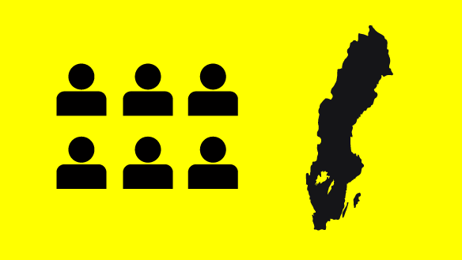

Statistik
Här hittar du statistik om yrkeshögskoleutbildningar, konst- och kulturutbildningar och utbildningar med endast tillsyn samt tolkutbildningar inom folkbildningen. Yrkeshögskoleutbildningar omfattar både yrkeshögskoleutbildning (YH) och kvalificerad yrkesutbildning (KY).
Faktablad med statistik
Här kan du ladda ner faktablad med kortfattad statistik om yrkeshögskole- utbildningar, konst- och kulturutbildningar samt tolkutbildningar.
Faktablad med kortfattad statistik om yrkeshögskolan 2019
Faktablad med kortfattad statistik om konst- och kulturutbildningar 2019
Faktablad med kortfattad statistik om tolkutbildningar 2019
Statistiska årsrapporter
Via länkarna nedan hittar du Myndigheten för yrkeshögskolans senaste årsrapporter med samlad statistik om de utbildningsformer som vi ansvarar för.
Statistisk årsrapport 2020
Statistisk årsrapport 2019
Statistisk årsrapport 2018
Statistisk årsrapport 2017
Har du frågor om vår statistik är du välkommen att kontakta oss på